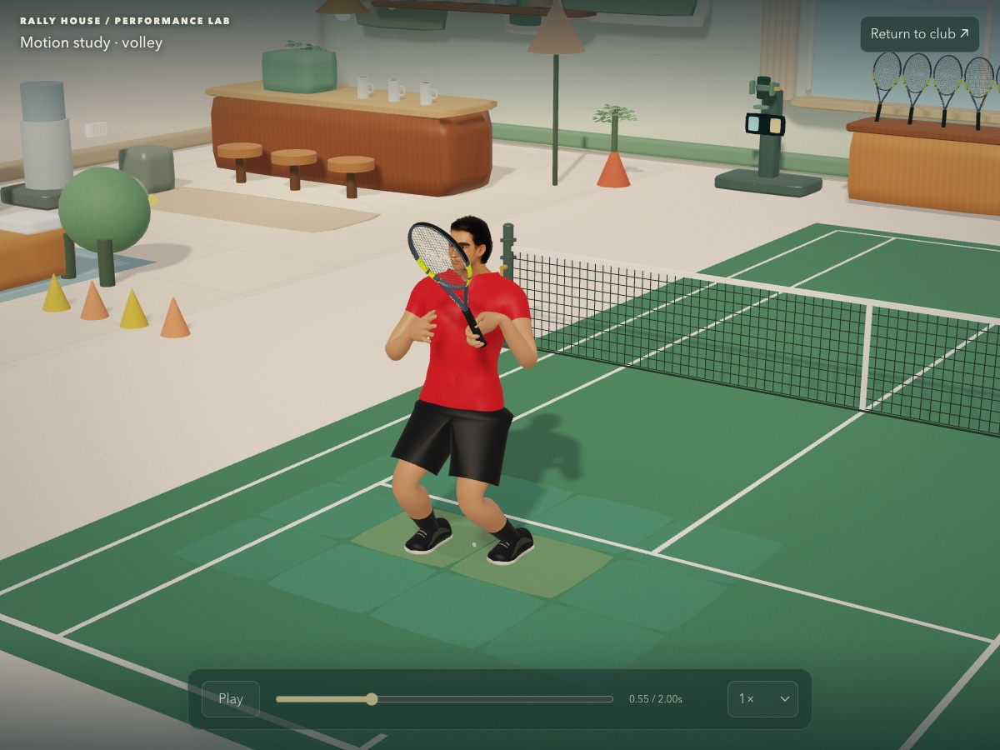
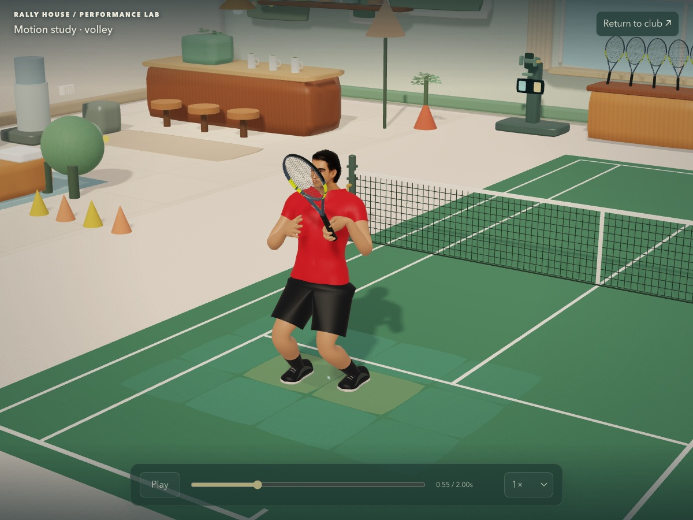

Rally House · local motion review · 23 Nov 2026
Same game. More grounded motion.
Compare the same action, timestamp and camera before and after. These are controlled poses rendered through Analyze Swing. Separate live-match recordings are linked below.
Play the local build ↗ · Original five-problem assessment · Verification and limitations
No deployment. Baseline 382163c1. The 12 deterministic rally traces match exactly across 19,854 frames and 187 contacts.
Before After
After
Watch the sequences
Each recording shows footwork, forehand, backhand, running shots and serve, with normal-speed and quarter-speed playback. Startup and capture pauses differ; use the matched frames above for exact comparisons.
BeforeAfter
Emergency volley — preserved
The compact emergency volley remains unchanged. Matched moment at 0.55 s:
Before
After
Before sequence · After sequence
Actual live play and replay
Before · live ChromiumAfter · live Chromium
Independent automated matches; these recordings are not phase-synchronized.
What changed
- Running groundstrokes retain the court stepping cycle and blend the shoes into recovery.
- Early preparation loads toward the hand's actual path, then restores the established contact solve before impact.
- The split-step hop translates the solved body, hands, racket and shoes together.
Rapid reversals can still narrow the stance. Hip and chest rotation remain closely coupled. The new running-foot correction is limited to Arjan; other rigs retain their calibrated movement.
Live before · Live after · Chromium live checks · WebKit live checks · Frame-pacing results
Mobile-sized desktop browsers, not a physical iPhone. No motion capture or athlete-derived animation assets.